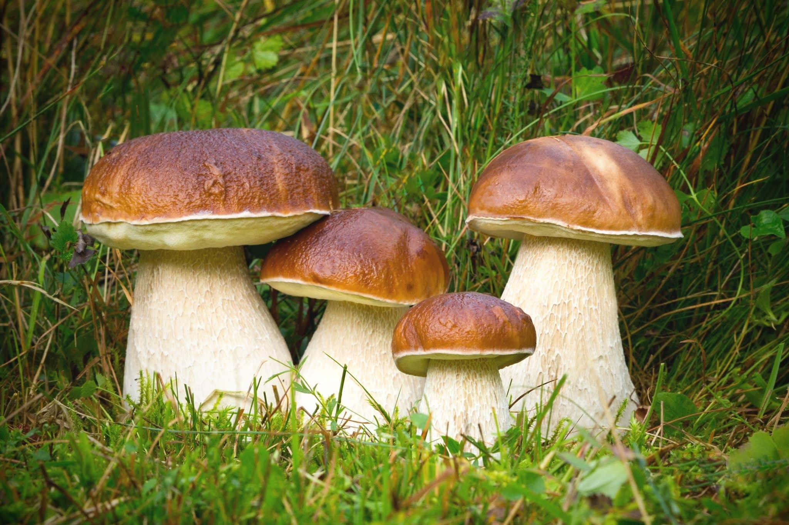

Белый гриб (съедобен)

Информация
- ШЛЯПКА: мясистая, у молодых грибов бледно-желтоватого цвета. Позже шляпка становится каштановой. Форма шляпки округлая, выпуклая, со временем более плоская. Верхняя поверхность гладкая, нижняя губчатая, мелкопористая, желтая.
- МЯКОТЬ: плотность, приятного грибного запаха и вкуса, на изломе сохраняется белый цвет.
- СПОРОВЫЙ ПОРОШОК: коричневого цвета.
- РАСТЕТ: в хвойных и лиственных лесах с полоины июля до половины октября.
- УПОТРЕБЛЕНИЕ В ПИЩУ: пригоден для супов, жаркого, маринада, засола и сушки.
- ЯДОВИТЫЙ ДВОЙНИК: желчный гриб